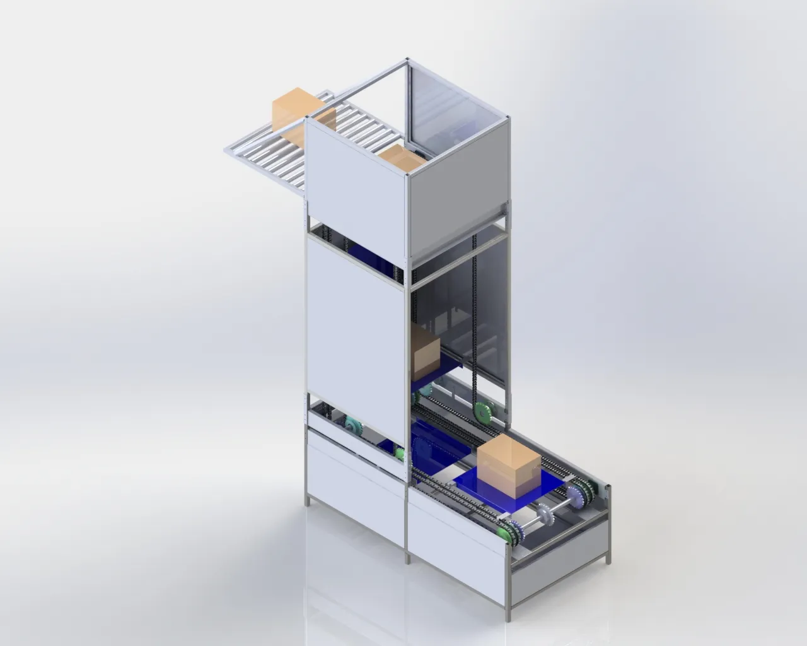

Vertical Indexing Conveyor
Chain-sprocket-driven industrial system
±0.5 mm indexing precision · PLC integrated

Overview
A robust vertical conveyor system designed for space-efficient buffering and indexing of parts in an automated assembly line. Features a precision chain-sprocket drive and synchronised motion control. Space-saving vertical design, ±0.5 mm indexing, PLC integration, safety interlocks, modular palette system.
What it does
- Space-saving vertical design
- High-precision indexing (±0.5 mm)
- PLC integration
- Safety interlocks
- Modular palette system
Tech
AutomationPLC ProgrammingCADPneumatics